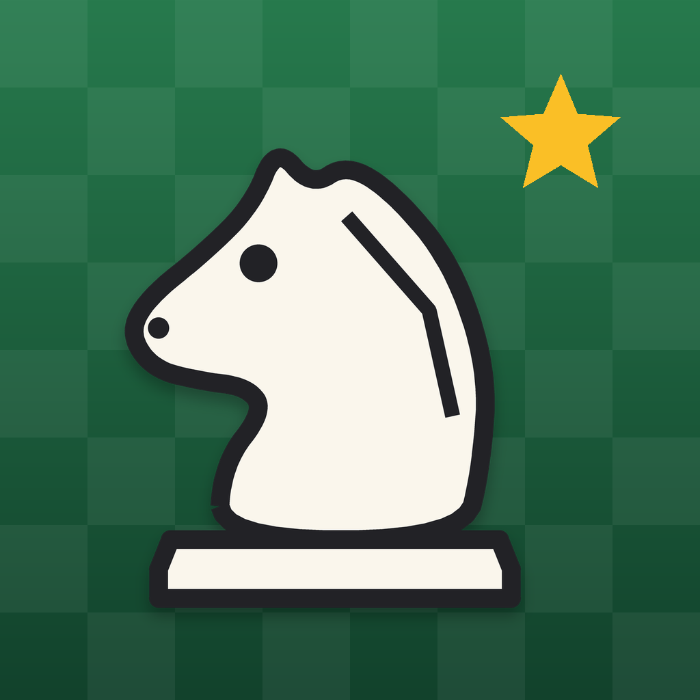

ChessQuest – Learn Chess
Support
Need help or found a bug? Email chessquest.support@gmail.com. Tell us your device and iOS version, and we usually reply within two business days.
Frequently asked questions
I bought Remove Ads but I still see ads.
Open the Settings tab → Restore Purchases. Make sure you're signed in with the same Apple Account you used to buy it. Remove Ads also works for family members if you use Family Sharing.
Open the Settings tab → Restore Purchases. Make sure you're signed in with the same Apple Account you used to buy it. Remove Ads also works for family members if you use Family Sharing.
Is Remove Ads a subscription?
No. It's a single one-time purchase. You're never charged again.
No. It's a single one-time purchase. You're never charged again.
How do I change my ad privacy choice?
Settings → Ad privacy choices. To change tracking permission, use the iPhone Settings app → Privacy & Security → Tracking.
Settings → Ad privacy choices. To change tracking permission, use the iPhone Settings app → Privacy & Security → Tracking.
Will I lose my progress if I delete the app?
Yes. Your stars, XP and streaks are saved only on your device. Deleting the app or using Reset all progress erases them.
Yes. Your stars, XP and streaks are saved only on your device. Deleting the app or using Reset all progress erases them.
Does ChessQuest work offline?
Yes. Lessons, puzzles and games all work without internet. Only ads and purchases need a connection.
Yes. Lessons, puzzles and games all work without internet. Only ads and purchases need a connection.
How do I turn off daily reminders?
Settings → Reminders, or turn off notifications for ChessQuest in the iPhone Settings app.
Settings → Reminders, or turn off notifications for ChessQuest in the iPhone Settings app.
Which languages are supported?
English, Spanish, Arabic, French, German, Italian, Portuguese (Brazil), Simplified Chinese, Japanese, Korean, Hindi, Russian, Turkish, Indonesian and Vietnamese. The app follows your iPhone's language.
English, Spanish, Arabic, French, German, Italian, Portuguese (Brazil), Simplified Chinese, Japanese, Korean, Hindi, Russian, Turkish, Indonesian and Vietnamese. The app follows your iPhone's language.